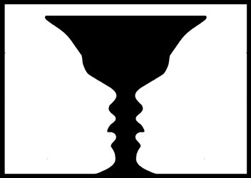

PEC
Prueba de Evaluación Continua Psicología 2025/2026
Organización perceptiva figura-fondo - Procedimiento experimental
Paso 0/48
Experimento de Organización Figura-Fondo
En este experimento indicarás qué color percibes como figura (delante) en una serie de láminas.
Instrucciones
Demo: Copa de Rubin

Esta figura reversible muestra cómo puede cambiar qué región se percibe delante.
- Mira el punto de fijación en el centro de la pantalla.
- Verás una imagen durante 100 ms.
- Después aparecerá una máscara visual.
- Responde qué color percibiste como figura (delante): BLANCO o NEGRO.
- La respuesta es obligatoria y no puede modificarse.
Inicio de bloque
+
¿Qué color percibes como figura?
Descanso
Has completado el primer bloque. Espera a que finalice el temporizador para continuar.
02:00
Experimento completado
Gracias por participar. Por favor, avisa al experimentador para cerrar la sesión.
Descarga el informe CSV y envíalo tal cual al experimentador, sin modificar.
Panel de resultados (investigador)
Resultados
TABLA 1: Frecuencia (AS / BS) por bloque
| Bloque | AS | BS |
|---|
TABLA 2: Porcentaje (AS / BS) por bloque
| Bloque | % AS | % BS |
|---|